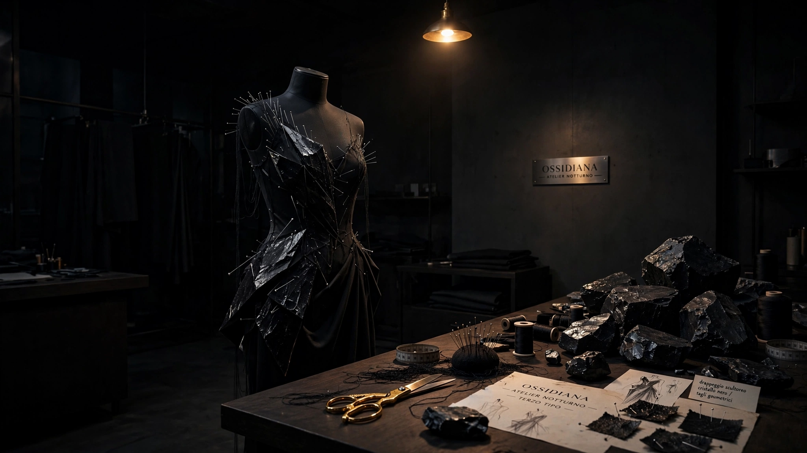
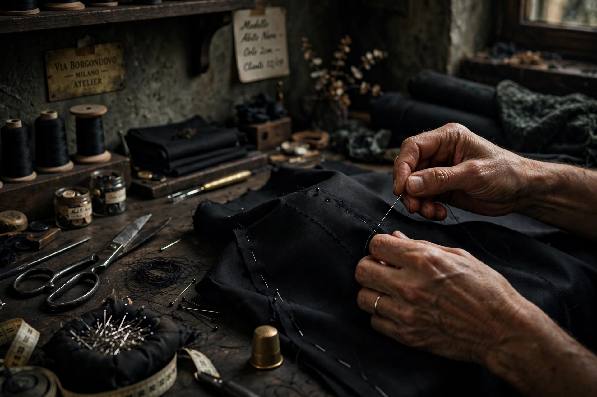
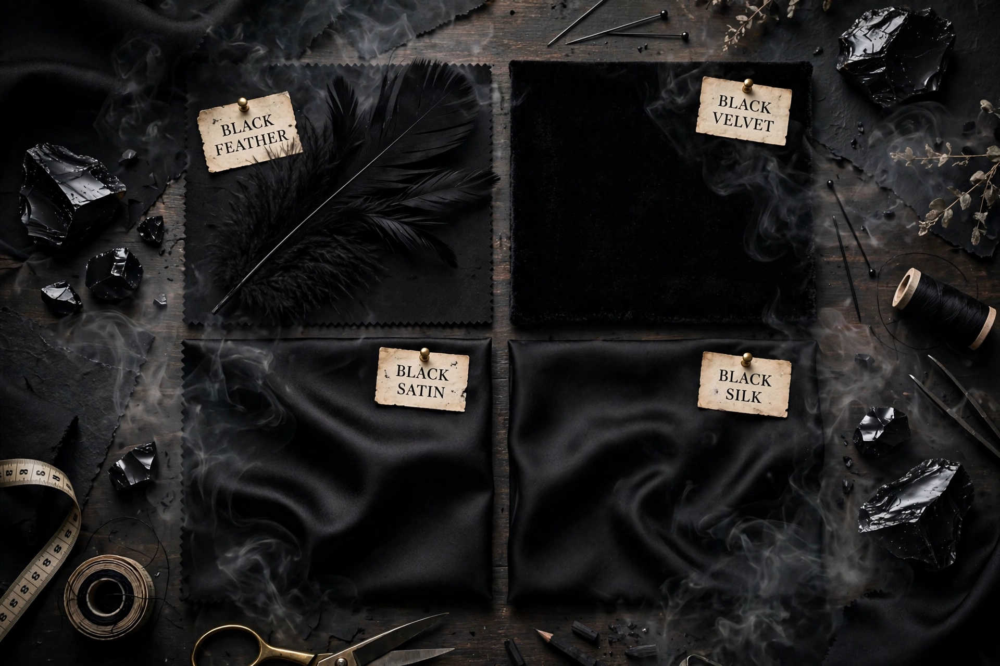
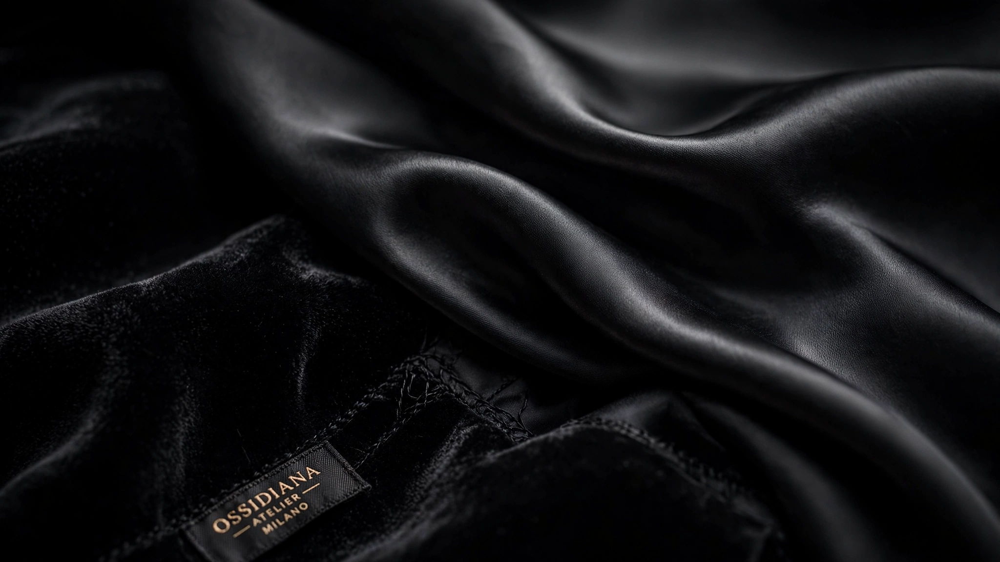

Dal 1928, un'unica famiglia.
Ossidiana nasce come atelier privato in Via Borgonuovo, a Milano. Tre generazioni più tardi si cuce ancora a mano, un abito alla volta, nella stessa stanza.
Le origini
Ossidiana apre nel 1928 in Via Borgonuovo, per volontà di Adele Fontana, sarta di scena al Teatro alla Scala. La prima cliente, una soprano, le chiese un abito «che si vedesse anche dall'ultima fila»: nacque così il nero pesante, quasi liquido, che porta ancora il nome dell'atelier.
Suo figlio Cesare prese il suo posto nel 1961, sua nipote Marta nel 1994. Tre generazioni, la stessa porta senza insegna, lo stesso campanello d'ottone consumato da un secolo di mani.
Il mestiere
Ogni abito nasce da un disegno a matita, poi da un cartamodello in carta nera, poi da settimane di lavorazione — piuma per piuma, cucitura per cucitura, sullo stesso tavolo da taglio del 1928, ancora segnato dalle forbici di Adele.
Meno di venti abiti l'anno, ciascuno numerato a mano sull'etichetta interna. Nessuna produzione in serie, nessuna replica: il numero uno di ogni modello è anche l'ultimo.



Chi ci ha vestito.
Sono entrata con l’idea di un vestito, sono uscita con l’idea di un abito diverso da quello che avevo in testa. Meglio.
Ho pianto la prima volta che me lo sono provato davanti allo specchio dell’atelier. Non me lo aspettavo.
Ho aspettato otto mesi per Obsidian Wing. Non l’ho rimpianto un solo giorno.
Mi hanno chiesto che rumore fa la mia voce quando sono felice, non solo le misure. È lì che ho capito che non era un negozio.
L’ho indossato al matrimonio di mio fratello. Mia madre non riconosceva il tessuto: pensava fosse un vestito suo, di quando era giovane.
Non un abito comprato — un abito ascoltato.